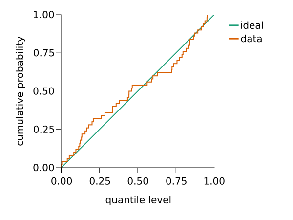

Ordinary least squares

You are seeing the HTML output generated by Documenter.jl and Literate.jl from the Julia source file. The corresponding notebook can be viewed in nbviewer, and the plain script output can be found here.
If you want to run the experiments, make sure you have an identical environment. Please use Julia 1.5.3 and activate and instantiate the environment using this Project.toml file and this Manifest.toml file.
The Github repository contains more detailed instructions and a nix project environment with a pinned Julia binary for improved reproducibility.
Packages
using CairoMakie
using CalibrationErrors
using CalibrationErrorsDistributions
using CalibrationTests
using Distributions
using StatsBase
using Random
using CairoMakie.AbstractPlotting.ColorSchemes: Dark2_8
# set random seed
Random.seed!(1234)
# create path before saving
function wsavefig(file, fig=current_figure())
mkpath(dirname(file))
return save(file, fig)
endwsavefig (generic function with 2 methods)
Regression problem
We consider a regression problem with scalar feature $X$ and scalar target $Y$ with input-dependent Gaussian noise that is inspired by a problem by Gustafsson, Danelljan, and Schön. Feature $X$ is distributed uniformly at random in $[-1, 1]$, and target $Y$ is distributed according to
\[Y \sim \sin(\pi X) + | 1 + X | \epsilon,\]
where $\epsilon \sim \mathcal{N}(0, 0.15^2)$.
We start by generating a data set consisting of 100 i.i.d. pairs of feature $X$ and target $Y$:
xs = rand(Uniform(-1, 1), 100)
ys = rand.(Normal.(sinpi.(xs), 0.15 .* abs.(1 .+ xs)))100-element Array{Float64,1}:
0.5729105366916976
0.7008258975704353
0.579462922689501
-0.3738848521513358
1.1417358680464722
0.4616589802994891
-0.9707788440783894
-0.8366526373482899
-0.8925127554986921
0.615269681318631
⋮
-0.7679599180187714
-0.657807297873009
0.827303587029641
0.5040791127460987
-0.529848796212195
-0.7957679298117362
-0.777286429640957
1.095834107039475
-1.0344250288630767Ordinary least squares regression
We perform ordinary least squares regression for this nonlinear heteroscedastic regression problem, and train a model $P$ with homoscedastic variance. The fitted parameters of the model are
bs = hcat(ones(length(xs)), xs) \ ys2-element Array{Float64,1}:
0.03205598523016466
1.005988112134222and the standard deviation of the model is given by
stddev = std(bs[1] .+ bs[2] .* xs .- ys)0.44716982188151255
The following plot visualizes the training data set and model $P$, together with the function $f(x) = \mathbb{E}[Y | X = x] = \sin(\pi x)$.
fig = Figure(; resolution=(960, 450))
# plot the data generating distribution
ax1 = Axis(fig[1, 1]; title="ℙ(Y|X)", xlabel="X", ylabel="Y")
heatmap!(
-1:0.01:1,
-2:0.01:2,
(x, y) -> pdf(Normal(sinpi(x), 0.15 * abs(1 + x)), y);
colorrange=(0, 1),
)
scatter!(xs, ys; color=Dark2_8[2])
tightlimits!(ax1)
# plot the predictions of the model
ax2 = Axis(fig[1, 2]; title="P(Y|X)", xlabel="X", ylabel="Y")
heatmap!(
-1:0.01:1,
-2:0.01:2,
let offset = bs[1], slope = bs[2], stddev = stddev
(x, y) -> pdf(Normal(offset + slope * x, stddev), y)
end;
colorrange=(0, 1),
)
scatter!(xs, ys; color=Dark2_8[2])
tightlimits!(ax2)
# link axes and hide y labels and ticks of the second plot
linkaxes!(ax1, ax2)
hideydecorations!(ax2; grid=false)
# add a colorbar
Colorbar(fig[1, 3]; label="density", width=30)
# adjust space
colgap!(fig.layout, 50)
wsavefig("figures/ols/heatmap.svg");
Validation
We evaluate calibration of the model with a validation data set of $n = 50$ i.i.d. pairs of samples $(X_1, Y_1), \ldots, (X_n, Y_n)$ of $(X, Y)$.
valxs = rand(Uniform(-1, 1), 50)
valys = rand.(Normal.(sinpi.(valxs), 0.15 .* abs.(1 .+ valxs)))50-element Array{Float64,1}:
0.8326520514581572
0.14294419777673867
0.5259941064739304
-0.7588180975334454
-0.22997692304435916
-0.16904762050501862
-0.34910087885759844
0.46510023094823394
-0.35216378065610593
-0.9371350333199572
⋮
0.7176168534475863
-0.88489958005972
-0.48045353020324627
-0.7338495669243824
-0.8484758728738399
-0.8915442531193621
0.5135713205439527
0.8026195193453686
-0.5179293540690129For these validation data points we compute the predicted distributions $P(Y | X = X_i)$.
valps = Normal.(bs[1] .+ bs[2] .* valxs, stddev)50-element Array{Distributions.Normal{Float64},1}:
Distributions.Normal{Float64}(μ=0.8970077906642928, σ=0.44716982188151255)
Distributions.Normal{Float64}(μ=0.07369870816218799, σ=0.44716982188151255)
Distributions.Normal{Float64}(μ=0.25940967206693516, σ=0.44716982188151255)
Distributions.Normal{Float64}(μ=-0.6829736779116784, σ=0.44716982188151255)
Distributions.Normal{Float64}(μ=-0.03794760257789277, σ=0.44716982188151255)
Distributions.Normal{Float64}(μ=-0.9188737914330312, σ=0.44716982188151255)
Distributions.Normal{Float64}(μ=-0.8593922040278451, σ=0.44716982188151255)
Distributions.Normal{Float64}(μ=0.7180619651280059, σ=0.44716982188151255)
Distributions.Normal{Float64}(μ=0.9771644795118668, σ=0.44716982188151255)
Distributions.Normal{Float64}(μ=-0.4217415548264924, σ=0.44716982188151255)
⋮
Distributions.Normal{Float64}(μ=0.2730567642719082, σ=0.44716982188151255)
Distributions.Normal{Float64}(μ=-0.39171286084273294, σ=0.44716982188151255)
Distributions.Normal{Float64}(μ=-0.8150460351758918, σ=0.44716982188151255)
Distributions.Normal{Float64}(μ=-0.6936273214320248, σ=0.44716982188151255)
Distributions.Normal{Float64}(μ=-0.351051448290986, σ=0.44716982188151255)
Distributions.Normal{Float64}(μ=-0.3531169842483718, σ=0.44716982188151255)
Distributions.Normal{Float64}(μ=0.9666583662589786, σ=0.44716982188151255)
Distributions.Normal{Float64}(μ=0.6566165341916999, σ=0.44716982188151255)
Distributions.Normal{Float64}(μ=-0.10723928713276361, σ=0.44716982188151255)Quantile calibration
We evaluate the predicted cumulative probability $\tau_i = P(Y \leq Y_i | X = X_i)$ for each validation data point.
τs = cdf.(valps, valys)50-element Array{Float64,1}:
0.44278265255012883
0.5615313093194866
0.7244655837714757
0.4326584761922252
0.3338041995994174
0.9532117849671311
0.8730978667242094
0.2858005660265308
0.0014756788522630802
0.12454394031495247
⋮
0.8399284573060224
0.1350337806791715
0.772843750864971
0.4641640781508847
0.132986603236461
0.11427974892548726
0.1554745338732305
0.6279786794373055
0.1791993018454301The following plot visualizes the empirical cumulative distribution function of the predicted quantiles.
fig = Figure(; resolution=(600, 450))
ax = Axis(
fig[1, 1];
xlabel="quantile level",
ylabel="cumulative probability",
xticks=0:0.25:1,
yticks=0:0.25:1,
autolimitaspect=1,
rightspinevisible=false,
topspinevisible=false,
xgridvisible=false,
ygridvisible=false,
)
# plot the ideal
lines!([0, 1], [0, 1]; label="ideal", linewidth=2, color=Dark2_8[1])
# plot the empirical cdf
sort!(τs)
ecdf_xs = vcat(0, repeat(τs; inner=2), 1)
ecdf_ys = repeat(range(0, 1; length=length(τs) + 1); inner=2)
lines!(ecdf_xs, ecdf_ys; label="data", linewidth=2, color=Dark2_8[2])
# add legend
Legend(fig[1, 2], ax; valign=:top, framevisible=false)
# set limits and aspect ratio
colsize!(fig.layout, 1, Aspect(1, 1))
tightlimits!(ax)
wsavefig("figures/ols/quantiles.svg");
Calibration test
We compute a $p$-value estimate of the null hypothesis that model $P$ is calibrated using an estimation of the quantile of the asymptotic distribution of $n \widehat{\mathrm{SKCE}}_{k,n}$ with 100000 bootstrap samples on the validation data set. Kernel $k$ is chosen as the tensor product kernel
\[\begin{aligned} k\big((p, y), (p', y')\big) &= \exp{\big(- W_2(p, p')\big)} \exp{\big(-(y - y')^2/2\big)} \\ &= \exp{\big(-\sqrt{(m_p - m_{p'})^2 + (\sigma_p - \sigma_{p'})^2}\big)} \exp{\big( - (y - y')^2/2\big)}, \end{aligned}\]
where $W_2$ is the 2-Wasserstein distance and $m_p, m_{p'}$ and $\sigma_p, \sigma_{p'}$ denote the mean and the standard deviation of the normal distributions $p$ and $p'$.
# define kernel
kernel = WassersteinExponentialKernel() ⊗ SqExponentialKernel()
# compute p-value estimate using bootstrapping
pvalue(AsymptoticSKCETest(kernel, valps, valys); bootstrap_iters=100_000)0.04625
We obtain $p < 0.05$ in our experiment, and hence the calibration test rejects $H_0$ at the significance level $\alpha = 0.05$.
This page was generated using Literate.jl.